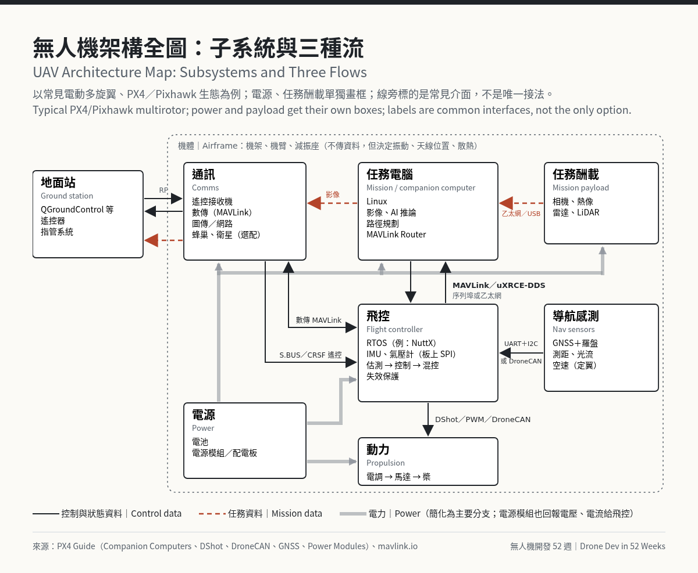
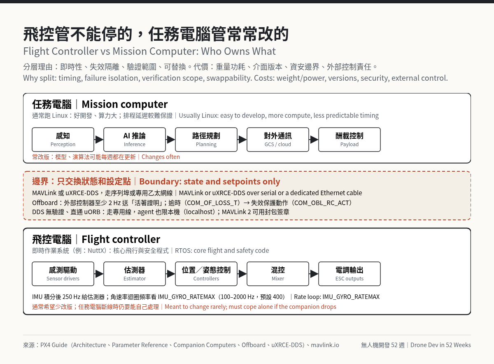

無人機架構全圖：子系統怎麼接，飛控和任務電腦為什麼分層
摘要： 一台無人機的架構，拆開來大致是機體、動力、飛控、感測、通訊、任務電腦和地面站七塊。這篇把無人機架構畫成一張全圖，逐條看介面怎麼接、資料怎麼流，再談飛控和任務電腦為什麼要分開、什麼時候不分。後半是本週無人機新聞與下週看點。
Summary: A UAV architecture breaks down into roughly seven blocks: airframe, propulsion, flight controller, sensors, communications, mission computer and ground station. This post draws them as one map, walks through each interface and the data flow, then covers why the flight controller and mission computer are kept apart, and when they aren't. The second half covers this week's drone news and what to watch next.
開場：同一艘船，換一套「大腦」｜Opening: Same Hull, Different Brain
MATURE Taiwan 海洋科技暨無人載具展開展前一天（11/2），雷虎在台南安平港邊演示 SeaShark 600 無人艇，說同一個船體可以裝美國廠商的 AI 自主系統，也可以裝雷虎自研的系統；載具控制系統和地面站是自己做的（中央社）。這是水面載具，但道理和空中一樣：能這樣換，前提是「讓載具穩定、安全動起來的那層」和「決定要去哪、要看什麼的那層」之間，有一條講清楚的介面。
無人機架構圖要畫的，就是這條介面，連同機上其他連線。上一篇〈無人機設計：為什麼要懂整台無人機，從需求到規格〉從任務推回規格；規格定了，下一步是決定子系統怎麼切、怎麼接。
At a harbor-side demo in Tainan the day before MATURE Taiwan opened (November 2), Thunder Tiger said its SeaShark 600 uncrewed boat can run either a US partner's AI autonomy stack or its own on the same hull, and that Thunder Tiger builds its own vehicle control system and ground control station (CNA). It's a boat, but the idea carries over to the air: swapping only works with a well-defined interface between the layer that keeps the vehicle stable and safe and the layer that decides where to go and what to look at.
This post maps that interface along with every other link on the aircraft. The previous post, "Drone System Design: From Mission to Spec", worked backward from the mission to a spec. Once the spec exists, the next step is the UAV architecture: deciding how to split the aircraft into subsystems and how to connect them.
1. 無人機架構全圖：子系統與三種流｜UAV Architecture Map: Subsystems and Three Flows
先把方塊排出來。以常見的電動多旋翼為例：
- 機體：機架、機臂、起落架、減振座。不傳資料，但決定振動怎麼傳到飛控、天線能放哪、散熱好不好。
- 動力：電池、電源模組或配電板、電調（ESC）、馬達、槳。
- 飛控：MCU 跑即時作業系統，板上有 IMU、氣壓計；姿態與位置估測、控制迴圈、混控都在這裡。
- 感測：GNSS 與羅盤、測距、光流；相機、熱像、雷達、LiDAR 這類任務酬載也算這層，但通常接到任務電腦。
- 通訊：遙控接收機、數傳、圖傳，有時還有蜂巢網路或衛星鏈路。
- 任務電腦（companion computer）：通常跑 Linux，負責影像處理、AI 推論、路徑規劃和對外通訊；PX4 文件列的例子有 ModalAI VOXL 2、NVIDIA Jetson、Raspberry Pi（PX4 Companion Computers）。
- 地面站：QGroundControl 這類軟體、遙控器、指管系統。
方塊之間有三種流，建議用三種線分開畫：
- 電力流：電池 → 電源模組／配電板 → 電調、飛控、通訊、任務電腦、酬載。電源模組除了穩壓供電給飛控，也回報電池電壓、電流，讓飛控估剩餘電量，並在低電量時發出警告或執行失效保護（PX4 Power Modules）。
- 控制與狀態資料流：感測器 → 飛控 → 電調；飛控 ↔ 任務電腦；飛控 ↔ 地面站。
- 任務資料流：相機、雷達等酬載 → 任務電腦 → 圖傳或網路 → 地面站。這條頻寬最大，但通常不在飛行安全的關鍵路徑上。
三種流分開畫，很快就看得出哪條線斷了會掉下來、哪條線斷了只是看不到畫面。圖上把電源從動力、任務酬載從感測拆開，方便標線。

The blocks of a typical UAV architecture, using an electric multirotor:
- Airframe: frame, arms, landing gear, vibration mounts; no data, but it shapes vibration, antenna placement and cooling.
- Propulsion: battery, power module or PDB, ESCs, motors, props.
- Flight controller: an MCU on a real-time OS with onboard IMUs and barometer; estimation, control loops and mixing.
- Sensors: GNSS and compass, rangefinder, optical flow; payloads (camera, thermal, radar, LiDAR) usually hang off the mission computer.
- Communications: RC receiver, telemetry radio, video link, sometimes cellular or satcom.
- Mission computer (companion): usually Linux, for vision, AI inference, planning and external comms; PX4 lists examples such as ModalAI VOXL 2, NVIDIA Jetson and Raspberry Pi (PX4 Companion Computers).
- Ground station: QGroundControl, RC transmitter, C2 systems.
Three flows run between the blocks, best drawn as three line styles:
- Power: battery → power module/PDB → ESCs, flight controller, radios, companion, payload. The power module also reports battery voltage and current so the flight controller can estimate remaining capacity and act on low power (PX4 Power Modules).
- Control and state data: sensors → flight controller → ESCs; flight controller ↔ mission computer; flight controller ↔ ground station.
- Mission data: payloads → mission computer → video link → ground station; most bandwidth, usually off the flight-safety path.
Drawn separately, it's obvious which broken wire brings the aircraft down and which just costs you the video. The map draws power and payload as their own boxes to keep labels readable.
2. 介面一覽：每條線用什麼接｜Interfaces: What Each Link Uses
下表以 PX4／Pixhawk 生態為例，ArduPilot 用的協定大多相同；除了酬載那列看各家規格，每列都附 PX4 或 MAVLink 官方文件連結。｜Typical PX4/Pixhawk links (ArduPilot is similar); all rows but the payload one link to PX4 or MAVLink docs.
| 連線｜Link | 常見介面｜Interface | 要注意的事｜Watch out for（來源｜source） |
|---|---|---|
| 飛控 ↔ 板上 IMU、氣壓計｜FC ↔ onboard IMU, baro | SPI（板內｜internal） | Pixhawk 4（FMUv5）的板上 IMU 和氣壓計走內部 SPI｜On FMUv5 both sit on internal SPI（PX4 rc.board_sensors） |
| 飛控 ↔ GNSS、羅盤｜FC ↔ GNSS, compass | UART＋I2C，或 DroneCAN | 標準 GPS 埠有一組 UART 給 GNSS、一組 I2C 給羅盤｜GPS port: UART for GNSS, I2C for compass（PX4 GNSS） |
| 飛控 ↔ 測距、空速｜FC ↔ rangefinder, airspeed | I2C 或 DroneCAN | I2C 有位址衝突和線路電容問題，機身大時常改用 CAN｜Address clashes, wiring capacitance; big airframes use CAN（PX4 I2C） |
| 飛控 → 電調｜FC → ESCs | PWM、OneShot、DShot，或 DroneCAN | DShot150／300／600 指 kbit/s，有檢查碼、不用校正；雙向 DShot（PX4 v1.16 起）用同一條線回傳 eRPM 給動態陷波濾波｜kbit/s, checksummed, no calibration; bidirectional DShot (PX4 v1.16+) returns eRPM for notch filtering（PX4 DShot） |
| 飛控 ↔ 電源模組｜FC ↔ power module | 類比、I2C 或 DroneCAN | 剩餘電量估算與低電量失效保護靠它｜Feeds capacity estimate and low-battery failsafe（PX4 Power Modules） |
| 飛控 ← 遙控接收機｜FC ← RC receiver | S.BUS、CRSF、DSM、PPM | 失聯時要設成不輸出或低油門；「保持最後值」PX4 偵測不到｜Output nothing or low throttle on loss; "hold last" is undetectable（PX4 RC） |
| 飛控 ↔ 數傳 ↔ 地面站｜FC ↔ telemetry ↔ GCS | MAVLink（UART） | MAVLink 2 每包額外負擔 12 bytes，支援封包簽章｜12 bytes overhead per packet, supports signing（MAVLink） |
| 飛控 ↔ 任務電腦｜FC ↔ mission computer | MAVLink 或 uXRCE-DDS；序列埠或乙太網 | PX4 建議有乙太網就用；地面站流量常經任務電腦轉送｜Ethernet preferred; GCS traffic often routed via the companion（PX4 Companion Computers） |
| 任務電腦 ↔ 酬載｜Mission computer ↔ payload | 看酬載，常見乙太網或 USB｜often Ethernet or USB | 頻寬最大的一段，先算資料量｜Highest bandwidth; size the data rate first |
CAN 和 DroneCAN。 DroneCAN（舊名 UAVCAN v0）把 GNSS、羅盤、空速、電源模組、電調掛在同一條 CAN 匯流排上，雙向、可回報健康狀態，也能從飛控統一更新周邊韌體。PX4 提醒，DroneCAN 電調最好放在專用的 CAN 介面，因為電調訊息量大，可能塞滿匯流排、讓其他節點分不到頻寬（PX4 DroneCAN）。
MAVLink 和 uXRCE-DDS。 MAVLink 是輕量訊息協定，地面站、相機、雲台都講它，適合跨廠商互通。uXRCE-DDS 讓飛控內部的 uORB 主題在任務電腦上變成 ROS 2 主題：飛控跑 client、任務電腦跑 agent，走序列埠或 UDP（PX4 uXRCE-DDS）。ArduPilot 也有自己的 ROS 2 介面（ArduPilot ROS 2）。
介面也是供應鏈和量產邊界。 架構圖上每條線的另一端，都可能是不同國家的不同廠商（本週新聞第 5 則就是例子）；介面越標準，換供應商要改的越少。量產時，線束也算介面的一部分：PX4 文件建議感測器線用雙絞線改善電磁相容，大電流線要和磁力計保持距離，因為它的 EMI 對羅盤影響很大（PX4 Cable Wiring）。
CAN and DroneCAN. DroneCAN (formerly UAVCAN v0) puts GNSS, compass, airspeed, power modules and ESCs on one bidirectional bus with health reporting and central firmware updates. PX4 warns that DroneCAN ESCs need their own CAN interface, since their traffic can saturate the bus and starve other nodes (PX4 DroneCAN).
MAVLink and uXRCE-DDS. MAVLink is the lightweight cross-vendor protocol that ground stations, cameras and gimbals speak. uXRCE-DDS exposes the flight controller's uORB topics as ROS 2 topics on the mission computer: a client on the flight controller, an agent on the companion, over serial or UDP (PX4 uXRCE-DDS). ArduPilot has its own ROS 2 interface (ArduPilot ROS 2).
Interfaces are supply-chain and production boundaries too. Each line on the map can end at a different company in a different country (news item 5 below is a case in point), and the more standard the interface, the less changes when you switch suppliers. In production the harness counts too: PX4 recommends twisted-pair sensor wiring for EMC and keeping high-current cables away from magnetometers, whose readings their EMI disturbs (PX4 Cable Wiring).
3. 資料流：一筆 IMU 資料怎麼變成馬達轉速｜Data Flow: From an IMU Sample to Motor Speed
以 PX4 為例，飛控模組透過 uORB 發佈／訂閱匯流排溝通，主線是：感測器驅動 → 估測器（EKF2，擴展卡爾曼濾波器）→ 位置控制 → 姿態與角速率控制 → 混控（把力矩命令分配到每顆馬達）→ 電調輸出（PX4 Architecture）。
更新率是分層的，陀螺儀資料還分兩路。PX4 架構文件的概略說法是 IMU 驅動以 1 kHz 取樣、積分後以 250 Hz 發佈給估測器，navigator 這類模組跑得慢很多（PX4 Architecture）；參數說明寫得更細：原始資料常見以 8 kHz 讀取和濾波，積分頻率由 IMU_INTEG_RATE 設定（預設 200 Hz）；角速率內迴圈吃另一路陀螺儀資料（vehicle_angular_velocity），頻率由 IMU_GYRO_RATEMAX 設定，可選 100 到 2000 Hz、預設 400 Hz（PX4 Parameter Reference）。實際數字依感測器和韌體版本而定，畫架構圖時寫你機型用 uorb top 量到的值。任務電腦在更外面一圈：送位置、速度或姿態設定點，不管每一拍的馬達輸出。
這條外圈有自己的「活著證明」。Offboard 模式要求外部控制器持續以至少 2 Hz 送設定點（MAVLink）或 OffboardControlMode（ROS 2）；超過 COM_OF_LOSS_T 沒收到，就執行 COM_OBL_RC_ACT 設定的動作，例如降落（PX4 Offboard Mode）。走 ROS 2 要注意：PX4 只看 OffboardControlMode 有沒有持續送，設定點沒按時送不會觸發失效保護，這點和 MAVLink 不同（同上）。反方向，uXRCE-DDS 從飛控發出的主題沒設定時上限 100 Hz，不少主題預設更低，例如 vehicle_status 是 5 Hz（PX4 uXRCE-DDS）。
所以架構圖每條線旁邊，除了協定，也建議寫上更新率和斷線行為；第 4 節的失效隔離就靠這兩欄檢查。兩者都能先在 SITL（軟體在迴路模擬）測，再上 HIL（硬體在迴路）和實機拔線測試。
In PX4, modules talk over the uORB publish/subscribe bus: sensor drivers → estimator (EKF2, an extended Kalman filter) → position control → attitude and rate control → mixer → ESC outputs (PX4 Architecture).
Rates are layered, and gyro data takes two paths. The architecture page's rough figures are 1 kHz sampling and 250 Hz integrated output for the estimator, with modules such as the navigator running much slower (PX4 Architecture); the parameter reference is more precise: raw data is commonly read and filtered at 8 kHz, integration runs at IMU_INTEG_RATE (default 200 Hz), and the rate loop runs on vehicle_angular_velocity at IMU_GYRO_RATEMAX (100–2000 Hz, default 400) (PX4 Parameter Reference). Actual numbers depend on the sensor and firmware; put your own uorb top readings on the map. The companion sits one ring further out, sending setpoints, not motor outputs.
That outer ring has its own proof of life. Offboard mode requires the external controller to keep streaming setpoints (MAVLink) or OffboardControlMode (ROS 2) at 2 Hz or more; if nothing arrives within COM_OF_LOSS_T, PX4 runs the action set in COM_OBL_RC_ACT, such as landing (PX4 Offboard Mode). Over ROS 2, PX4 only watches the OffboardControlMode stream: unlike MAVLink, late setpoints don't trigger a failsafe (same source). Outbound uXRCE-DDS topics default to a 100 Hz cap, many lower (vehicle_status: 5 Hz) (PX4 uXRCE-DDS).
So each line on the map should carry an update rate and loss behavior, not just a protocol; section 4's failure isolation is checked against those two columns. Both can be tested in SITL (software-in-the-loop), then HIL (hardware-in-the-loop), then pull-the-cable tests on the aircraft.
4. 為什麼要分飛控電腦和任務電腦｜Why Split the Flight Controller and the Mission Computer
PX4 文件說，飛控跑 NuttX，負責核心飛行與安全程式；任務電腦通常跑 Linux，因為一般軟體開發比較方便（PX4 Companion Computers）。分開的理由有四點。
1. 即時性。 姿態控制要每一拍準時算完。NuttX 這類即時作業系統可以固定排程；通用 Linux 同時跑影像辨識、ROS 2 節點和網路服務，除非特別做即時化設定，排程延遲比較難保證。內迴圈留在飛控，任務電腦再忙也拖不到姿態控制。
2. 失效隔離。 任務電腦當機、重開、軟體更新失敗，飛控還在，Offboard 斷線保護會接手；地面站數據鏈斷了，也有自己的失效保護（COM_DL_LOSS_T、NAV_DLL_ACT，PX4 Safety）。所有東西都擠在同一台電腦、又沒有分區的話，一個記憶體洩漏就可能拖垮整台機。
3. 驗證範圍。 任務電腦上的 AI 模型可能每週都在改，飛控程式通常希望改得少；切開之後，任務層改版主要重驗它送出的設定點和斷線行為。正式的航空軟體驗證裡，FAA AC 20-115D 把 DO-178C 列為一種可接受（但不是唯一）的符合方法：系統安全評估依失效狀況的嚴重度指定開發保證等級（DAL），該等級的目標都要滿足（FAA AC 20-115D，針對型式認證航空器與 TSO 件）。作者據此推論：高等級程式越集中在飛控、範圍越小，要用高 DAL 驗證的軟體就越少。另一條路是 ASTM F3269 的執行期保證（run-time assurance）：複雜功能在安全監控下執行，越界就切到復原功能，RTA 的各元件（安全監控、切換、復原功能）本身仍要達到安全評估指定的保證等級（ASTM F3269-21）。
4. 可替換。 開場的 SeaShark 600 是一例，本週的 IC 攻頂計畫也是各家各做一塊再接起來（新聞第 2 則）。層次清楚，換一塊才不必整台重來。
什麼時候不分層。 不少小型穿越機和成本敏感的機型只有飛控。分開也不一定是兩塊板子：PX4 把 Auterion Skynode、ModalAI VOXL 2 列為飛控與任務電腦同模組的整合系統（PX4 Companion Computers），VOXL 2 的 PX4 跑在晶片的感測器 DSP 上、主處理器跑 Ubuntu（PX4 VOXL 2）。整合省重量和線材，但即時性和失效隔離改靠晶片內的分區，驗證時也得證明分區有效。
分層的代價有四個：
- 重量、功耗、散熱。 多一台電腦就多吃電池。凌霄航太董事長羅正方（經緯航太創辦人）說，SiMa.ai 的 Modalix 是唯一在他們功耗限制內達到 50 TOPS 機上 AI 算力的方案，選擇看的是每瓦效能（Focus Taiwan）。
- 介面版本要對齊。 用 uXRCE-DDS 時，任務電腦的 ROS 2 程式要用和韌體相同的 uORB 訊息定義（px4_msgs），否則會解讀錯誤；有版本號的訊息 PX4 有轉換節點處理，沒版本號的仍要手動對齊（PX4 uXRCE-DDS）。
- 資安邊界。 PX4 文件明寫：DDS 傳輸沒有驗證、直通 uORB，飛控和任務電腦之間要用序列線或專用乙太網線，不走共用或無線網路。光有直連線還不夠：agent 會在任務電腦上把資料再發佈到 DDS 網路，所以也要限在本機，例如
UXRCE_DDS_PTCFG設 localhost、ROS_AUTOMATIC_DISCOVERY_RANGE=LOCALHOST（Humble 用ROS_LOCALHOST_ONLY=1）；資料要離開任務電腦，保護就是整合者的責任（同上）。MAVLink 2 有封包簽章（MAVLink）。 - 外部控制的責任。 PX4 在任何模式下都分不出 ROS 2 訊息來自內部還是外部，也不會替你擋，所以外部程式要自己做到：只在 Offboard 模式送設定點，並先用
OffboardControlMode宣告要寫哪些主題；否則可能和內部控制器互相覆寫，PX4 文件說後果可能是災難性的（PX4 Offboard Mode）。

Per the PX4 docs, the flight controller runs NuttX for core flight and safety code, and the companion usually runs Linux because it's better for general software development (PX4 Companion Computers). The split comes down to four reasons.
1. Real-time behavior. Attitude control must finish on time every cycle. An RTOS like NuttX schedules that deterministically; Linux running vision, ROS 2 nodes and network services makes latency harder to guarantee unless tuned for real time. With the inner loops on the flight controller, a busy companion can't drag down attitude control.
2. Failure isolation. If the companion crashes, reboots or botches an update, the flight controller carries on and the Offboard-loss failsafe takes over; the ground link has its own failsafe (COM_DL_LOSS_T, NAV_DLL_ACT, PX4 Safety). Put everything on one computer with no partitioning and a single memory leak can take the aircraft with it.
3. Verification scope. AI models on the companion may change weekly, while flight-controller code is meant to change rarely; a mission-layer update then mainly means re-verifying its setpoints and link-loss behavior. In formal airborne software assurance, FAA AC 20-115D recognizes DO-178C as an acceptable, though not the only, means of compliance: the safety assessment assigns a development assurance level (DAL) from failure-condition severity, and all objectives for that level must be met (FAA AC 20-115D, for type-certificated aircraft and TSO articles). The author's inference: the smaller the high-DAL code kept on the flight controller, the less software needs high-DAL verification. Another route is run-time assurance under ASTM F3269: a complex function runs under a safety monitor that switches to a recovery function when it leaves safe bounds, and the RTA components themselves (monitor, switch, recovery function) must meet the assurance level set by the safety assessment (ASTM F3269-21).
4. Swappability. The SeaShark 600 is one example; this week's IC program, with each company building one piece, is another (news item 2). Clean layers let you replace one block without redoing the aircraft.
When not to split. Small racing quads and cost-sensitive airframes often have only a flight controller. A split needn't mean two boards either: PX4 lists Auterion Skynode and ModalAI VOXL 2 as integrated flight-controller-plus-companion modules (PX4 Companion Computers); on VOXL 2, PX4 runs on the chip's sensors DSP while the main processor runs Ubuntu (PX4 VOXL 2). Integration saves weight and wiring, but timing and isolation then rest on on-chip partitioning, which verification must show holds.
The split costs four things:
- Weight, power, heat. Another computer draws from the same battery. Max Lo, chairman of AerosoarX and founder of Geosat, said SiMa.ai's Modalix was the only option meeting their 50 TOPS onboard AI requirement within power limits; performance per watt decided it (Focus Taiwan).
- Interface versions must match. With uXRCE-DDS, companion code needs the firmware's uORB definitions (px4_msgs) or messages get misread; a translation node covers versioned messages, unversioned ones need manual alignment (PX4 uXRCE-DDS).
- Security boundary. DDS transport is unauthenticated and reaches uORB directly, so PX4 says to use a serial or dedicated Ethernet cable, not a shared or wireless network. A cable alone isn't enough: the agent republishes into DDS on the companion, so keep that local too (
UXRCE_DDS_PTCFGset to localhost,ROS_AUTOMATIC_DISCOVERY_RANGE=LOCALHOST, orROS_LOCALHOST_ONLY=1on Humble); data leaving the companion is the integrator's to secure (same source). MAVLink 2 offers packet signing (MAVLink). - Responsibility for external control. PX4 can't tell ROS 2 messages from internal ones and won't stop you, so external code must publish setpoints only in Offboard mode and declare them via
OffboardControlMode; otherwise it can fight the internal controllers, with possibly catastrophic results per PX4 (PX4 Offboard Mode).
架構審查清單｜Architecture Review Checklist
畫完無人機架構圖，建議每條線都過一次這張表。它等於一份簡化的 FMEA（失效模式與影響分析）：每列問一個介面、寫它失效時的影響和怎麼驗證；驗證方式欄沿用上一篇的需求檢查清單（分析／測試／檢查／展示）。
Once the UAV architecture map is drawn, run every link through this table, a simplified FMEA (failure mode and effects analysis): one interface per row, its failure effect and how to verify it, using the verification column from the previous post's requirements checklist.
| # | 問題｜Question | 失效影響｜Failure effect | 為什麼（來源）｜Why (source) | 驗證方式｜Verification |
|---|---|---|---|---|
| 1 | 每條線都寫了協定、方向、更新率、斷線行為嗎？｜Protocol, direction, rate, loss behavior on every link? | 任務電腦或數據鏈斷線，執行 COM_OBL_RC_ACT／NAV_DLL_ACT 的動作｜Loss runs the configured action |
各有逾時與失效保護參數｜Timeout and failsafe parameters（PX4 Offboard、PX4 Safety） | 檢查＋測試（拔線）｜Inspection + Test (pull the cable) |
| 2 | 遙控接收機失聯時輸出什麼？｜What does the RC receiver output on loss? | 若「保持最後值」，飛控以為還有人操控，失效保護不觸發｜"Hold last value" hides the loss from the FC | PX4 偵測不到這種狀況｜PX4 can't detect it（PX4 RC） | 測試（關遙控器）｜Test (switch off the transmitter) |
| 3 | DroneCAN 電調有沒有專用 CAN 介面？｜Do DroneCAN ESCs have a dedicated CAN interface? | 匯流排塞滿，GNSS、羅盤等節點分不到頻寬｜Saturated bus starves GNSS, compass | PX4 DroneCAN | 檢查（配線圖、UAVCAN_ESC_IFACE）｜Inspection |
| 4 | I2C 有沒有位址衝突、線是不是太長？｜Any I2C address clashes or long runs? | 測距、空速等裝置失效，資料中斷｜Rangefinder, airspeed or other devices drop out | PX4 I2C | 檢查＋測試（i2cdetect、示波器）｜Inspection + Test |
| 5 | 任務電腦只在 Offboard 模式送設定點嗎？｜Does the companion send setpoints only in Offboard? | 和內部控制器互相覆寫，行為不可預期｜Fights internal controllers | PX4 分不出內外部訊息｜PX4 can't tell them apart（PX4 Offboard） | 測試（SITL 模擬任務電腦當機）｜Test (kill companion in SITL) |
| 6 | DDS 網路隔離到本機了嗎？對外 MAVLink 要簽章嗎？｜Is DDS kept local? Should external MAVLink be signed? | 連得上 DDS 網路的人就能寫入飛控訂閱的 /fmu/in/ 主題｜Anyone on the network can publish to /fmu/in/ | DDS 未驗證｜DDS is unauthenticated（PX4 uXRCE-DDS、MAVLink） | 檢查＋測試（另一台機器 ros2 topic list 看不到 /fmu/）｜Inspection + Test |
| 7 | 訊息定義和韌體版本一致嗎？｜Do message definitions match the firmware? | 訊息被解讀錯誤｜Messages get misread | PX4 uXRCE-DDS | 檢查（版本紀錄）＋測試（整合測試）｜Inspection + Test |
工程師重點｜Engineer's Takeaways
- 先畫介面表，再選板子。 每條線寫清楚協定、方向、更新率和斷線時會怎樣；電力、控制資料、任務資料分三種線畫。 Draw the interface table before choosing boards. Protocol, direction, rate and loss behavior per link; three line styles for power, control and mission data.
- 飛控放安全關鍵、少改版的功能；任務電腦放常改版的功能。 兩者之間只交換狀態和設定點，任務電腦斷線時飛控要有預設動作。 Safety-critical, rarely changed functions go on the flight controller; fast-changing ones on the companion. Only state and setpoints cross, with a default action when the companion goes quiet.
- 介面同時是供應鏈和資安邊界。 標準介面讓模組換得掉；DDS 要隔離到本機、對外 MAVLink 考慮簽章，訊息版本跟著韌體一起管。 Interfaces are supply-chain and security boundaries. Standard interfaces keep modules swappable; keep DDS local, consider signing external MAVLink, and version message definitions with the firmware.
下週預告｜Next Week
重量與推重比預算表怎麼做｜Building a Weight and Thrust-to-Weight Budget
這張架構圖列出了所有方塊，下一篇我想替每個方塊填上重量：怎麼訂推重比目標、餘裕留多少，以及一份可以直接拿去用的預算表格式。
Next, I want to put a weight on every block in this map: setting a thrust-to-weight target, choosing margin, and a reusable budget table.
本週無人機大新聞｜This Week's Big Drone News
1. 國防部：交貨要全機拆驗；漢翔說明進口紀錄｜Taiwan MND to Tear Down Drones at Delivery; AIDC Explains Import Records
國防部長顧立雄 11/3 在立法院說，不論追加或年度預算的採購，都要確保沒有陸製品：交貨時全機拆驗、訪廠確認產線布置、軟體安裝與實體隔離，另做資安檢測，並要求原廠與產地證明和切結書；國防部希望民國 116 年完成所需無人機與無人載具籌獲（聯合新聞網）。11/6 漢翔針對前一天的報導聲明：報導引用的進口紀錄屬實，但那是依國際發動機大廠客戶指定、為民用發動機採購的分件，和無人機、軍機專案無關（中央社、自由財經）。
我的看法： 驗收從看文件走到拆機，供應商除了產地證明，還要備好一路追到晶片的 BOM 紀錄。
On November 3, Defense Minister Wellington Koo told legislators that all drone procurement must be free of PRC-made products: full teardown at delivery, factory visits, physical separation checks, cybersecurity testing, origin certificates and signed affidavits, with acquisitions due by 2027 (UDN). On November 6, AIDC said the import records in a report the day before were real but covered civil-engine parts bought at an international customer's direction, unrelated to drone or military programs (CNA, Liberty Times Finance).
My take: Once acceptance moves from paperwork to teardown, a supplier needs more than an origin certificate; it needs BOM records that trace down to the chip.
2. 義隆、雷虎、新馳 IC 攻頂計畫：11 顆晶片與量產時程｜Elan, Thunder Tiger, Gallopwave: 11 Drone ICs and a Production Timeline
三家公司的「國產 AI 智慧平戰轉換無人機平台暨先進手持式地面站」通過經濟部 IC 攻頂計畫，總經費 10 億元、預計開發 11 顆 IC；五大技術方向是避障測距（TOF）、地面站 Mini LED 調光、AI 視覺導航、SDR 圖傳與 Ad Hoc Mesh（規劃支援 5 架以上蜂群），以及 HIL／SIL 模擬平台（TechNews）。分工上，雷虎定次系統規格並整合，義隆做晶片與裝置端 AI 影像，新馳做 AI 視覺導航；地面站規劃後量子密碼（經濟日報）。
義隆電董事長 11/5 法說會上給了時程（公司目標）：類似 Skydio 的 360 度單眼視覺避障方案最快明年第一季量產，已有客戶為台電相關標案接洽驗證；四鏡頭搭配 AI Box 的避障系統仍在開發。AI 視覺導航、GPS 防欺騙與避障已送樣，但還要和飛控整合，預計明年第三季量產；SDR 抗干擾方案預計明年下半年推出，目標通訊距離 20／30／60 km（壹蘋新聞網）。
我的看法： 「還要和飛控整合」就是第 4 節那條邊界：視覺導航模組的輸出要接進飛控，更新率、延遲和斷線行為都得先講好。
The three companies' "domestic AI drone platform for peacetime-to-wartime conversion and advanced handheld ground station" passed the economics ministry's IC program: NT$1 billion and 11 planned ICs across five technology areas: TOF obstacle ranging, Mini LED dimming for the ground station, AI visual navigation, SDR video link with ad hoc mesh (planned for swarms of 5 or more), and a HIL/SIL simulation platform (TechNews). Thunder Tiger defines subsystem specs and integrates, Elan does chips and on-device AI imaging, Gallopwave does visual navigation; the ground station plans post-quantum cryptography (Economic Daily News).
At Elan's November 5 earnings call, the chairman gave company-target dates: a 360° monocular obstacle-avoidance module similar to Skydio's could reach mass production as early as Q1 next year; the four-camera + AI Box system is still in development. AI visual navigation, GPS anti-spoofing and avoidance have sampled but still need integration with the flight controller, with mass production expected in Q3; an SDR anti-jam solution is planned for the second half, targeting 20/30/60 km (Nextapple).
My take: "Still needs integration with the flight controller" is the section 4 boundary in practice: the module's output has to plug into the flight controller with agreed rates, latency and loss behavior.
3. 雷虎拿下內政部「無人機組」共同供應契約六個品項｜Thunder Tiger Wins All Six Categories of the Interior Ministry Drone Contract
台灣銀行採購部代內政部辦理的「無人機組」共同供應契約（LP5-114063）10/16 決標、11/4 公告，總決標金額新台幣 10 億 4,810 萬 8,000 元；15 家投標、10 家得標，雷虎是唯一六個品項全數得標的廠商。這個金額是各機關可訂購的上限，實際營收看下單（中央社、自由財經）。同一週，公路局說要把無人機擴充到 201 架、再增 40 名飛手（中央社）。
The Interior Ministry's NT$1,048,108,000 "drone set" joint supply contract was announced November 4; Thunder Tiger was the only one of 10 winners to take all six categories. The amount is an ordering ceiling, not revenue (CNA, Liberty Times Finance). The same week, the Highway Bureau said it plans to grow its fleet to 201 drones and add 40 pilots (CNA).
4. 中科院和美國 DTC 深化通信合作｜NCSIST Deepens Comms Cooperation with US Firm DTC
中科院 11/4 說，將和美國 Domo Tactical Communications（DTC）深化合作：推動美製通信裝備在台生產，對與中科院合作的 5 型無人機廠商提供通信產品優惠價；技術上整合台灣自主通信波形和 DTC 的軟體定義無線電平台（抗干擾、智慧頻譜管理），產業面研議在地採購、組裝、測試與「去紅化」。中科院沒有公布型號、廠商名單和優惠幅度（自由軍武頻道）。
我的看法： 自主波形跑在合作夥伴的 SDR 上，是分層做法：波形是自己的，硬體平台可以換。
On November 4, NCSIST said it will deepen cooperation with Domo Tactical Communications (DTC): local production of US comms gear, discounts for the makers of the five drone types it works with, Taiwan's own waveforms on DTC's software-defined radios, and local sourcing and "de-redding." No models, companies or discounts were named (Liberty Times Defense).
My take: Running your own waveform on a partner's SDR is a layered design: the waveform stays yours, the hardware platform can change.
5. 零件層：Neros 拿貸款自製零件，Terra Drone 點名台灣依賴｜The Component Layer: Neros Borrows to Build Parts, Terra Drone Names Taiwan Dependence
五角大廈戰略資本辦公室（OSC）11/2 對 Neros 提出最高 4.5 億美元的附條件貸款，Neros 自投 1.65 億美元，用來擴建加州 Torrance 工廠，自製整機、地面站和馬達、飛控、無線電、熱像感測器、電池；目標 2028 年每年 100 萬架，撥款前還要通過盡職調查（Defence Blog、DroneXL）。
日本 Terra Drone 社長德重徹在現代ビジネス專訪說，每台無人機約 20 個主要零件，自製的只有電池和飛控，其餘都靠台灣等外國供應；台灣有事、海路封鎖，生產會立刻停，所以日本要建「非中國」也「非台灣」的國產供應鏈（現代ビジネス）。他主張零件國產比例至少 65%（以價值計），並說防衛省目前規劃的規則只對國產零件加分（DroneXL）。接下來看日本的採購規則會不會從加分改成門檻。
On November 2, the Pentagon's Office of Strategic Capital offered Neros a conditional loan of up to $450 million, plus $165 million of Neros equity, to expand its Torrance, California plant and make motors, flight controllers, radios, thermal sensors and batteries in-house, targeting 1 million drones a year by 2028, pending due diligence (Defence Blog, DroneXL).
Terra Drone CEO Toru Tokushige told Gendai Business that of about 20 main parts per drone, only batteries and flight controllers are made in-house; the rest come from Taiwan and other foreign suppliers, so a Taiwan crisis would halt production and Japan needs a supply chain free of China and Taiwan (Gendai Business). He wants at least 65% domestic content by value, noting that the Defense Ministry's planned rule only awards bonus points for domestic parts (DroneXL). Next to watch: whether Japan turns those points into a floor.
其他值得一看｜Also Worth a Look
- MATURE Taiwan（11/3–5）：台船說單一遙控站最多可控制 50 艘；海軍 1,320 艘小型自殺無人艇案若過立法院，第一年編 30 億餘元、優先籌獲 120 艘（自由軍武頻道）。DSET 同場發布無人艇報告，建議依任務訂驗收標準、分階段驗證（DSET）。｜MATURE Taiwan: CSBC says one station can control up to 50 boats; DSET urges mission-based acceptance standards.
- Shield（原 Shield AI）以 53 億美元收購雷達商 Echodyne，並籌資 25 億美元：Series H 10 億（投後估值 288 億）、Blackstone 旗下基金 10 億結構型股權、5 億債務融資；Echodyne 新廠將可年產約 3 萬具雷達，交割後雷達仍單獨販售（Shield）。｜Shield will buy Echodyne for $5.3 billion and raise $2.5 billion ($1B Series H at $28.8B post-money, $1B Blackstone structured equity, $0.5B debt); the new plant will be able to make about 30,000 radars a year, and Echodyne radars stay on sale standalone.
- Zipline 募資 15 億美元（投後估值 215 億），Walmart 再加 300 個配送據點；Wing 兩年最多投 1.25 億美元建 Fort Worth 新廠；麻州 Westborough 以 510 比 13 通過禁止地面配送設施條例，待州司法部長核可（Zipline、Wing、DroneXL）。｜Zipline raises $1.5B; Wing builds a Fort Worth plant; Westborough votes 510–13 against ground-level delivery sites.
- DJI 11/5 發表 Matrice 5T，規格表沒列 FCC；11/2 另向第九巡迴法院聲請 mandamus，要求 FCC 盡快裁定 Covered List 再議案（DroneXL、Drone Authority）。｜DJI's Matrice 5T spec sheet lists no FCC; DJI also seeks mandamus against the FCC.
- 海軍陸戰隊規劃採購 2 套 30 公厘「無人航空器反制自動化槍塔」，總額 9,312 萬元，要求整合雷達、光電與紅外線追瞄（自由軍武頻道）。｜Taiwan Marines plan two 30 mm counter-drone turrets with radar and EO/IR.
下週可能發展｜What to Watch Next Week
- 11/15（日）北京無人機持有禁令生效，全市禁止持有、存放或攜入無人機與核心零件。｜Nov 15: Beijing drone possession ban.（DroneXL）
- 11/19（四）FCC 公開會議，表決 450 MHz 無人機控制鏈路和 24 GHz 無人機偵測雷達。｜Nov 19: FCC votes on 450 MHz control links and 24 GHz detection radar.（DroneXL）
- 11/20（五）前立法院三讀追加預算：國防 1,457 億元，其中濱海監偵型無人機等 3 項 559 億元。｜By Nov 20: Taiwan's supplementary defense budget vote.（工商時報）
- 12/7（一）FAA Part 108（BVLOS）法定期限。｜Dec 7: statutory deadline for FAA Part 108 (BVLOS).（DroneXL）
- 日期未定｜No date yet： 亞拓案的國軍與內政部清查後續（檢方說法，尚無判決）（Taipei Times）；陸戰隊槍塔招標（自由軍武頻道）。｜Align case audits (allegations only); Marine Corps turret tender.
Albert｜無人機工程師｜Drone Engineer
履歷｜Resume：cwliao.com
連載頁｜Series：無人機開發 52 週｜Drone Dev in 52 Weeks